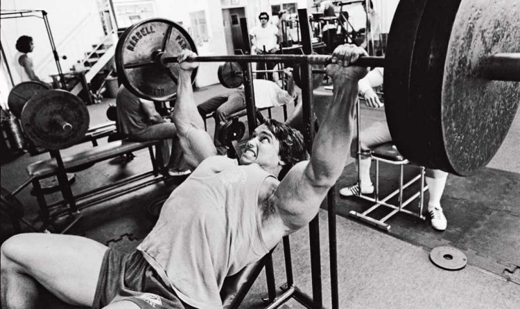

Bench Press
The Bench Press is a fundamental strength-building exercise that focuses on the chest, shoulders, and triceps, offering numerous benefits for overall upper body strength.
- Builds chest muscle mass and strength effectively.
- Improves pushing power for sports and daily activities.
- Strengthens the shoulders and triceps for balanced upper body development.
- Enhances overall upper body stability and coordination.
- Helps increase bone density due to weight-bearing movements.
- Step 1: Lie flat on a bench with your eyes directly under the bar. Place your feet firmly on the ground for stability.
- Step 2: Grip the bar slightly wider than shoulder-width, ensuring your wrists are straight and aligned with your forearms.
- Step 3: Unrack the bar carefully and position it directly above your chest with straight arms.
- Step 4: Inhale as you slowly lower the bar to your mid-chest, keeping your elbows at about a 75-degree angle.
- Step 5: Exhale as you press the bar back up to the starting position, ensuring controlled movement throughout.
- Step 6: Perform 8–12 repetitions depending on your fitness level and goals, maintaining proper form.
Note: Always use a spotter or safety bars when lifting heavy weights. Warm up properly to avoid injuries, and focus on gradual progressions for strength improvements.